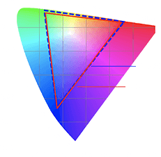
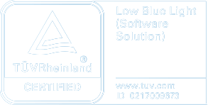

The perfect monitor for gamers
This 27-inch e-sports display has a resolution as high as 1920 × 1080. It adopts a fast IPS LCD, allowing you to respond to quick-time events swiftly. With lightning-fast speed, you'll be king of the hill in no time.
- 1920 × 1080Resolution
- Fast IPSPanel for game
- 178°Wide viewing angle
- HDR10*Richer
contrast and
more details
A high refresh rate of up to 165Hz, gives a silky-smooth picture, even in high-speed and dynamic competitive environments. 1ms GTG quick response reduces freezing and dynamic blur, and helps players move quickly to win in competitive games where every second counts!
- 165HzHigh refresh rate
- 1ms GTG Response time
With FreeSync™ Premium, the computer graphics card and the display panel maintain real-time synchronization, effectively reducing shaking, lagging, and tearing.
Every monitor has been strictly inspected for color calibration before leaving the factory to ensure that the factory ΔE 2 (average) color is accurate. Fantastic for gaming and good for visual work, too.
Outstanding 8-bit professional color depth, bringing more vivid color layers and smooth and natural transitions. 99% sRGB color gamut compatibility. With a broad color display range, you can enjoy a game's true colors!
- 99% sRGB color gamut
- 8-bit Professional color depth
With TÜV Low Blue Light Certification, the low blue light mode can filter short-wave blue light, ensuring comfort even after working long hours. DC dimming can effectively reduce display flicker. Dual protection for your eyes!
- 
Supports pitch angle fine-tuning and wall mounting*. Be comfortable all the time, in any posture.
- Tilt forwards/backwards
- Wall mounting
three sidesImmersive view for a natural look and feel
product and needs to be purchased separately.
Notes:
*99% sRGB wide color gamut: refers to the 99% sRGB color gamut ratio calculated in CIE 1931 color space. *ΔE 2 professional color standard: ΔE 2 is the average value, and ΔE refers to the testing unit for color differences perceived by the human eye in a uniform color perception space. It can quantify color reproduction to enhance the accuracy of the color display. The smaller the numerical value, the less color distortion. This product provides sRGB color gamut calibration for each monitor and includes a color calibration report. The color gamut mode needs to be switched on manually in the OSD menu. Select Picture mode or Game mode Color space sRGB.
*Low Blue Light Certification: refers to TÜV Low Blue Light Certification ID:0217009673; the low blue light mode needs to be turned on manually: Enter the OSD menu and select Picture mode Select mode Low blue light.
*This product supports a maximum resolution of 1920 x 1080 with a maximum refresh rate of 165Hz. For optimal performance, it is recommended that the included HDMI cable be used to connect to this product's HDMI port. If the display resolution or refresh rate does not reach the optimal value when other HDMI cables are connected, please contact the supplier to confirm whether the HDMI cables or signal source equipment used for the connection supports the maximum resolution output.
*Product images and models, data, functions, performance, specifications, user interface and other product information on this page are for reference only. Xiaomi may amend this information. For details, please refer to the actual product. *The comparisons made on this page refer to Xiaomi products. The comparison images are for illustrative purposes only and may not accurately reflect the actual performance or functionality of the product.
*Unless otherwise stated, all data on this page are derived from internal laboratories. Actual data may vary depending on environmental factors.
*To enhance the product's visual appeal, the power supply and cables have not been displayed on this page. Please note that the cables must be connected to a power supply to use this product. *AMD FreeSync™ technology requires AMD Radeon™ graphics and a display that supports FreeSync technology as certified by AMD. AMD FreeSync™ Premium technology adds requirements for mandatory low framerate compensation and a minimum 120Hz refresh rate in minimum FHD. AMD FreeSync™ Premium Pro technology requires the display to meet AMD FreeSync Premium Pro compliance tests. See www.amd.com/freesync for complete details. Confirm capability with your system manufacturer before purchase. GD-127